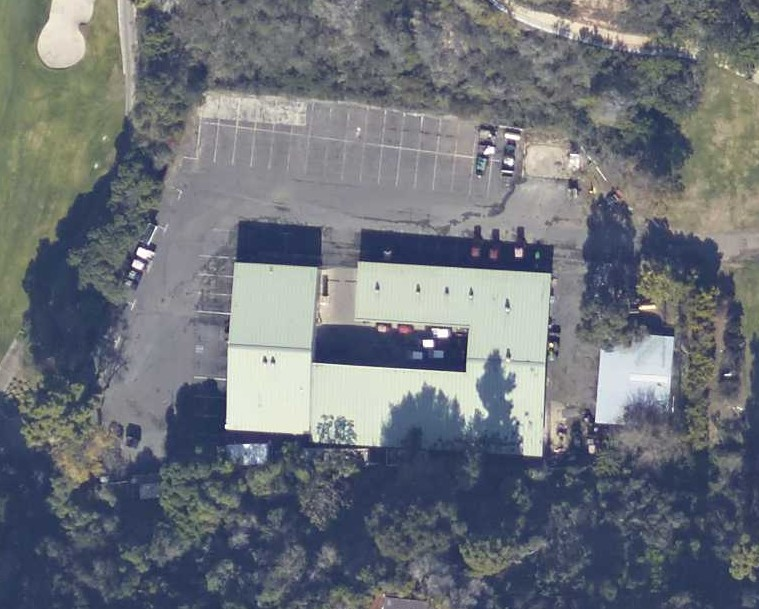
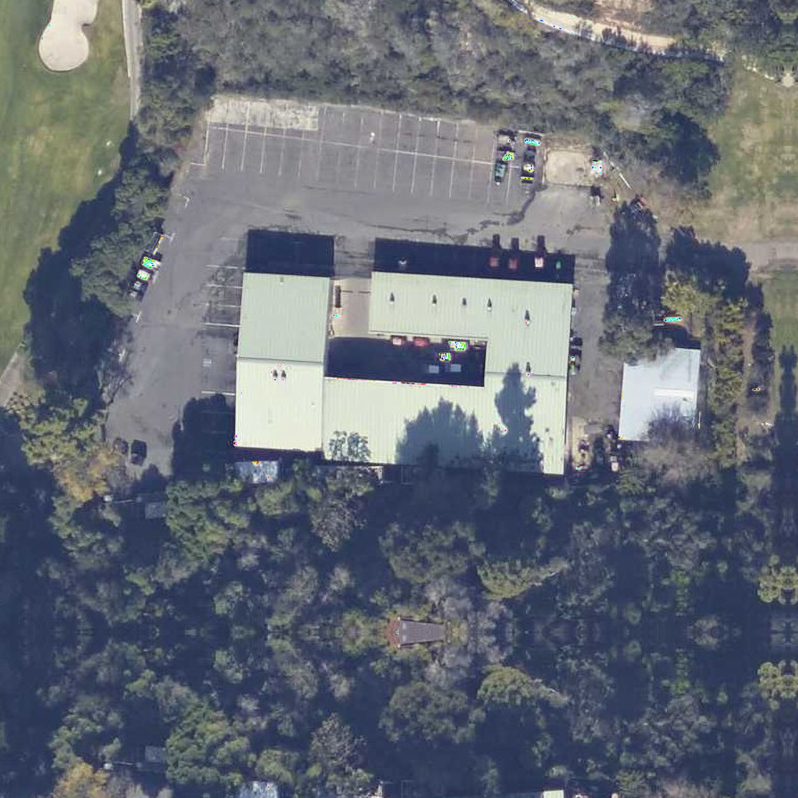

Super Resolution for Satellite Images
Satellite image super resolution is a project that aims to simplify satellite images Super-Resolution using deep learning. The project is divided into three parts:
- Python : Script to convert the model to onnx format. Script to run the model satellite images after dividing them into tiles.
- WebApp : Webapp to run the model on satellite images in the browser.
- Models : The models used in the project in onnx format.
The models were converted to onnx format and then used in the webapp. The models weights are based on the original implementation for the paper entitled "A Comparative Study on CNN-Based Single-Image Super-Resolution Techniques for Satellite Images" downloaded from here.
WebApp
The webapp is built using html, css, javascript and bootstrap. The model is run in the browser using onnxruntime-web. The webapp is hosted on github pages.
The webapp can be accessed here.
Examples
The following are some examples of the webapp.
| Input | Output |
|---|---|
|  |  |
 |